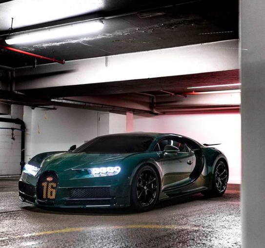
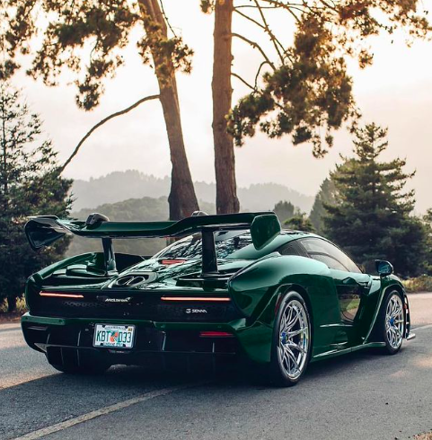
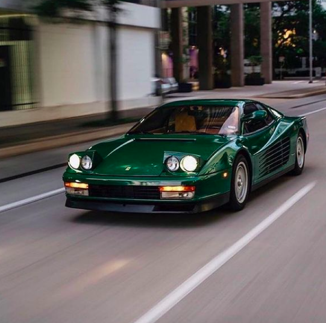
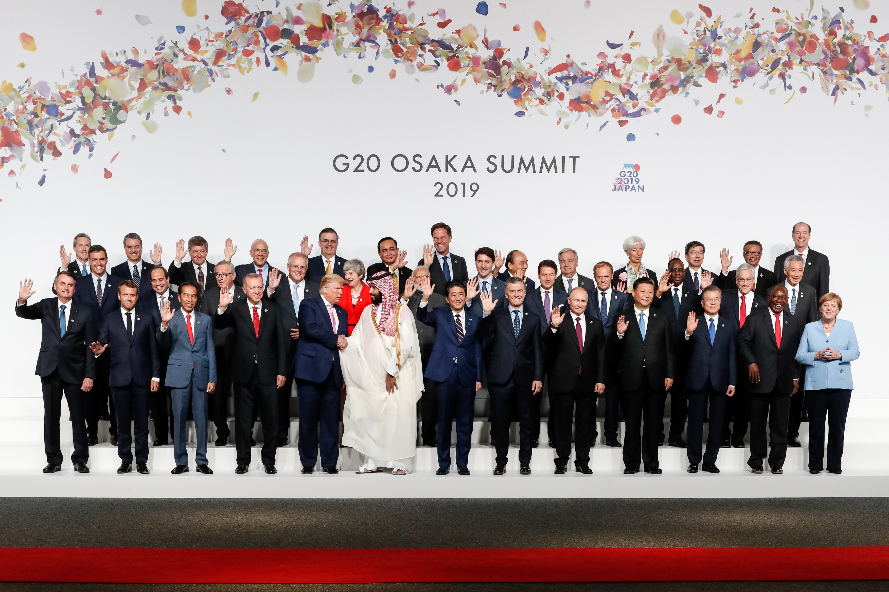
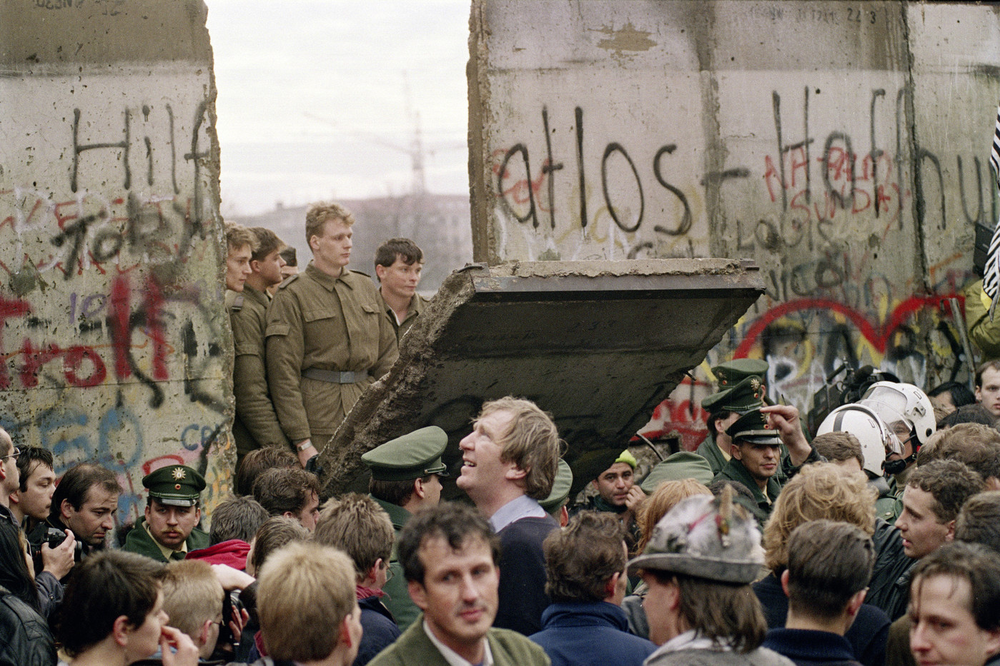
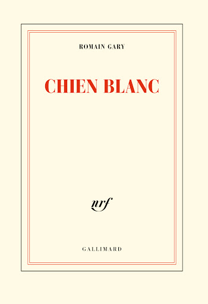
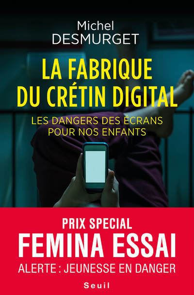
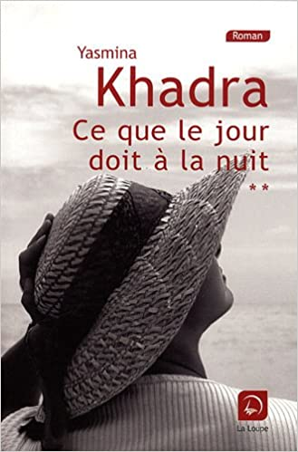

I'm Alexandre, 22 years old, actually finance student in M2 at IESEG.
This webpage will be a short resume of myself. Hope you will enjoy enter in my world.
I'm a car enthusiast since my early childhood. For me, it's more than a means of locomotion. All cars have a place in my heart, especially green cars.
  Understanding and apprehending, the world in which I evolve is fundamental for me. But, it makes no sense to do it without linking it with the past. It's a reading grid absolutly essential
 It's my new passion, I try to read three books minimum each month, and since the beginning of this challenge 2 years ago, I hold it. It's a way to satisfy my curiosity, and it brings food to my brain.
  